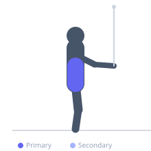

Exercise guide / Standing Cable Horizontal Woodchopper
Standing Cable Horizontal Woodchopper
The standing cable horizontal woodchopper trains transverse-plane rotation of the trunk by pulling a cable handle from one side of the body to the other at chest height, challenging the obliques, transverse abdominis, and hip rotators in a movement pattern directly applicable to throwing, striking, and swinging sports. The cable provides consistent tension throughout the rotation in both directions — unlike medicine ball throws — allowing controlled loading at all points in the arc.
Primary muscles
internal oblique
external oblique
Secondary muscles
transverse abdominis
erector spinae
Stabilizers
gluteus medius
tensor fasciae latae
Equipment
Cable Machine (Dual Pulley / Functional Trainer)


Starting position
- Stand side-on to a cable machine set at chest height. Grasp the handle with both hands, arms extended, feet shoulder-width apart.
Setup
- Set the cable pulley to chest height. Stand far enough from the machine that the cable is taut at the start.
Steps
- Step 1: Begin with the handle in front of the shoulder closest to the cable stack, arms extended.
- Step 2: Rotate the trunk away from the cable stack, pulling the handle horizontally across the body.
- Step 3: Rotate until the handle is in front of the far shoulder, keeping arms straight throughout.
- Step 4: Resist the cable and return to the starting position in a controlled manner.
- Step 5: Complete all reps on one side before switching.
Coaching cues
- Keep the arms straight — this is a torso rotation
- Drive with the far hip to initiate the rotation
Breathing
- Exhale as the handle crosses the body. Inhale on the return.
Range of motion
- Shoulder-to-shoulder rotation arc. Keep the spine tall throughout.
Tempo
- 2-1-2-0. Controlled pull and controlled return.
Common mistakes
- Bending the elbows and turning a rotation exercise into an arm pull
- Rotating from the hips only without engaging the trunk rotators
Safety
- Keep the spine neutral — do not laterally flex toward the cable
Training
- strength: 10–15 reps
- hypertrophy: 12–20 reps
- hypertrophy: 3–4 sets
- Rest: {'hypertrophy': 60}